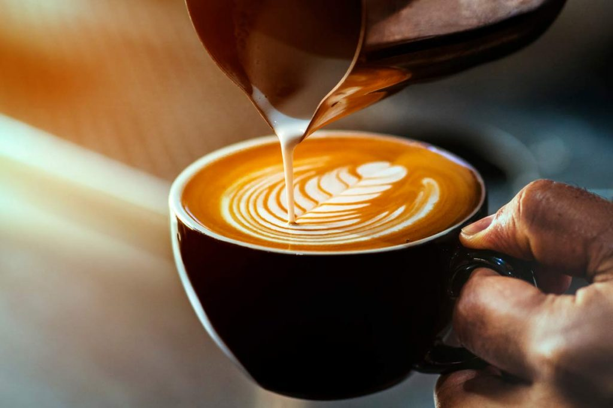

Baristalıkta bahsetteğimiz gibi bir baristanın popülaritesini, yaptığı kahvelerin lezzeti kadar latte art gibi sanatsal sunumlardaki yetkinliği de belirlemektedir. Baristalık açısından latte art`ı bu kadar önemli kılan şey de budur. Başarıyla gerçekleştirilen latte art, kahvenin hem o dükkanda popülerleşmesini sağlayabilmekte hem de çağımızın vazgeçilmezi sosyal medya platformlarında paylaşılarak dükkanın ve hatta baristanın popülaritesini arttırabilmektedir.
Latte art kısaca, süt kremasından yararlanılarak yararlanılarak espresso yüzeyinde çeşitli estetik şekiller oluşturma sanatına verilen addır. Latte art yapabilmek için espresso ve kremalaşmış süt gerekmektedir. Espresso ve krema arasında bulunan yoğunluk farkı, kremanın üstte kalmasını ve böylece çizim yapabilmeyi sağlamaktadır.
Latte art, ilk kez 1980`li yıllarda David Schomer tarafından uygulanmıştır. İlk olarak 1980`li yıllarda Seattle`de ortaya çıkan latte köpüğüne şekil verme sanatı, Amerika`da popüler olduktan sonra tüm dünyaya yayılmıştır. Latte art, bir nevi baristanın kahve üzerindeki sanatsal ve kişisel mührü olarak da bilindiğinden baristalar için hayli önemli bir mevzudur.
Latte art yapımında espresso ve süt olmak üzere iki ana malzeme bulunmaktadır. Latte art’ın başarıya ulaşması için bu iki ana malzemenin doğru ve eksiksiz bir şekilde hazırlanması gerekmektedir. Latte art’ın nasıl yapıldığını bilmek için espresso ve sütün nasıl doğru bir şekilde hazırlandığını bilmek önemlidir.
Espressonun doğru hazırlanması demek, süt kremasının yüzeyde tutunabilmesi için espressonun yoğun hazırlanması demektir. Eğer espresso yapım aşamasında kahve tanecikleri doğru sıkıştırılamamışsa espresso daha akışkan ve seyrek olur. Böyle bir espresso, latte art için uygun değildir. Çünkü akışkan ve seyrek espresso elde edildiğinde süt direkt olarak kahveye karışmakta ve art yapımını imkânsız hale getirmektedir. İşte bu yüzden espressonun doğru bir şekilde hazırlanması oldukça mühimdir. Espressonun doğru hazırlandığından emin olunması adına kıvamını test etmek için üzerine çok az toz şeker dökülebilir. Eğer tanecikler hemen dibe çöküyorsa espresso yanlış hazırlanmış, tanecikler yüzeyde kısa süre tutunduktan sonra yavaşça çöküyorsa doğru hazırlanmış demektir.
Sütün doğru hazırlanması demek ise; mikro taneciklerden oluşan, baloncuk içermeyen ve çok katı olmayan bir süt elde edilmesi anlamına gelmektedir. Eğer süt, capuccinodaki gibi köpük kaplı olursa latte art yapımı imkânsızlaşır. Çünkü sütün köpüklü ve katı olması hem rahat çizim yapabilmeyi önler hem de yapılan şeklin bir süre sonra karışarak ortadan kaybolmasına neden olur. Hazırlanan latte’ye herhangi bir art çalışması yapılmasa bile latte kremasının baloncuksuz olması gerekmektedir.

Eğer espresso ve süt doğru bir şekilde hazırlandı ise latte art yapımı gerçekleştirilebilir. Bunun için ilk olarak bir ele pitcher alınır. (Eğer sütün üstünde baloncuk varsa bir iki kere tezgâha vurarak patlatılabilir.) Diğer ele ise espresso dolu fincan alınır. Kremanın üstte kalması için espressonun hafif bir eğimle tutulması gerekmektedir. İlk önce süt, fincanın yarısını dolduracak şekilde espressonun 10 santim kadar üstünden dökülmelidir. Ardından pitcher, espressoya yaklaştırılarak fincanın tam ortasına süt yavaş bir şekilde boşaltılmalıdır. Bu esnada ortada yuvarlak bir tabaka oluşacaktır. Bu tabaka yeterli büyüklüğe geldiğinde pitcher’i yavaşça ileri doğru sürerek kalp şekli oluşturulabilmektedir.
Latte art ile kahvenin üzerine pek çok farklı şekil yapılabilmektedir. Farklı şekiller yapmak için sütün yavaşça hareket ettirilmesi, oluşan çizgilerin daha net olmasını sağlamaktadır. Ayrıca daha iyi şekil verebilmek için baş ve işaret parmağı ile pitcher’in iki yanından tutmak da baristaların sıkça başvurduğu bir yöntem olarak bilinmektedir.
Latte art yetkinliğini, barista olmanın adımlarından biri gibi düşünmek de mümkündür. Çünkü pek çok işletme işe alacağı baristadan bu yetkinliği beklemektedir. Zira baristalık alanında verilen pek çok eğitimde de bu konuya önemle yer verilmektedir.